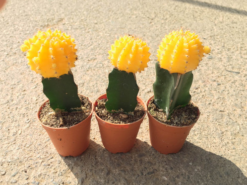

My favorite type of cereal is captain crunch but my family barely buys it because it's too sweet and is very unhealthy also I really don't like eating my cereal with milk becuase I don't like milk very much because of the texture and the taste ugh I don't like milk at all.

THESE ARE MY FAVORITE WEBSITES

VANS
Vans are a good everyday shoe because what's amazing about vans is that even after they get dirty they still look good. My favorite versions of the vans are the sk8 hi, low top sk8, the checkerboards and the checkerboard coasts. I like the colors white and black, blue, and light purple.

CACTI
My favorite type of cati are the ruby ball I like them in yellow or the redish-pink color they look really cool. I saw them at this plant market in boston. I don't have one yet but I'm getting one this summer to put in my room. In this article I read it said their really easy to care for.

FJALLRAVEN KANKEN
I really want a fjallraven kanken those super nice backpacks. You can get them in a bunch of different colors and the colors are all super cute even the sand color looks good everyone says their so amazing and water proof and everything how their so beautiful. I want to get one in air blue or a lilac color I saw a couple of them at urban Outfitters and on this website called eastdane. I hope I get one soon because they are amazing.


SOME OF MY FAVORITE SONGS FOR SUMMER//2017:
-congratualtions by Post Malone
-scars to your beautiful by Alessia Cara
-wild by Troye Sivan and Alessia Cara
-location by Khalid
SELF-LOVE CH.1
For the first chapter of the self-love series i'm doing on my net I wanted to talk about being confident in the clothes you decide to wear. I happen to really like the 90's and hipster look and some of the clothes I wear you would'nt see any one else wear such as a grandma style wind breaker or high waisted mom jeans or 90's styled top you probably won't see anyone wearing those clothes today. So when I see something I like I usually say oh would I really wear this or no one else is wearing this but I usually end up buying it anyway with the mind set that I'm the one that's wearing the clothing item this is my style and I really like how it looks and this style is apart of my personality. Mainly the people that question my style are my siblings and their usually just saying it to make fun of me and I unfortunatly have to wear a uniform to school so no one at my school really questions my style because they only see it through a instagram picture. Most of my freinds also share the love of 90's style with me so there's no rude remarks from them. Anyway if you do happen to have freinds or others who question your style just brush their remarks off and keep wearing what your wearing because it's a part of your style and your personality. :)
SELF LOVE CH.2
In this chapter I wanted to about talk the very impotrant topic of body confidence so let's get started. Society is constantly shaming those medium sized or larg sized or extra large sized wearers and those people with zits and other flaws that make them beautiful any way. Though I will happily say the model industry is progressing by putting plus sized women in ads smiling becuase they feel good about themselves. Many websites are having different sized women and race put on their website for modelling clothes. It shows other people a reality and they have those women do interviews and share encouraging messages to everyone about how, how much you weigh or the color of your skin or anything else that may not be up to societies "standards" does not define your worth. They talk about their struggles and they talk about how much they've grown and how their way more confident in their skin and love themselves and these messages can encourage girls and boys around the world to appreciate their one and only body they have instead shaming their body and saying negetive things which will put them down and make them feel terrible about themselves even though their very worth it and wonderfull the way they are.
BOOKS I RLY WANT TO READ
-note to self by connor franta I really want to read this book because it seems really inspirational and it has a lot of really important topics and topics im passionate about. It talks about connor's child hood and how he has grown a lot and a bunch of other great treasures in it I keep reading the sample on the Barnes and Noble site but yea I really want to read note to self.

-the other book I really want to read is milk and honey by rupi kaur. I want to read this book because it seems very powerful and it feels like rupi's thoughts were just poured onto the page and she did'nt stop writting until it was all out. Again I also keep reading the book sample on the Barnes and Noble site and it sounds really really good and I love the book cover I will probably end up trying to draw the cover of the book sometime.yep those are the books I really want to read right now. bye.

MY FAVORITE GIRL GROUPS
First is the girl group Salt-N-Peppa they played a big role in the hip hop industry of women. They were from Queens,New York and I have always loved their style and music they created together.

Then my other favorite girl group is spice girls. I still have to watch their movie "spice world" but their music is great and it really gives off the late 90's and early 2000's vibe my favorite spice girls are Mel C and Mel B and my favorite song by them is "say you'll be there". I am also kind of inspired by their style especially Mel C's style. So those are my favorite girl groups.
I LOVE LATIN-AMERICAN FOOD A WHOLE LOT
my favorite places to eat latin american food are district taco, chipotle, and this spot in georgetown I can't pronounce the name but their food is so so so good. I like tacos,enchiladas, quesadillas,and burritos.